Color Part 3 - Design Considerations
Discussion of Reading
Activity (Attention)
Visual Processing
Activity (Preattentive Attribute)
Gestalt Principles of Perception + Activity
Explain Homework
Most recent life-hack or life-skill you learned
4/7: Maps, pt 1
4/14: Maps, pt 2
4/21: Final Project Preparation
Description: For the final project you will create a report in a similar style to the NYT articles we have viewed in class. Using data of your choosing, your report will include at least 3 different kinds graphics (scatterplot, histogram, map, etc.).
For each visualization there should be:
A description of what the graphic reveals about the data
A description of certain design decisions you made in order to produce the graphic(i.e. type of plot, color scheme, theme elements, etc.)
DURING class on Tuesday 4/28 you will give a brief 3-5 minute presentation of your report via google slides.
Final Project Proposal
Presentation:
Coding Materials:
Make sure your data falls within the project guidelines:
You may not use a data set that has already been used in the course:
You may use multiple data sets if they are related:
You may use your own data from an app, device, or website
Suggestions for Finding Data Sets:
Contact us by 4/14 if you need help finding a data set!
Note: You may need to manipulate the data set you download before using it
If your data is not in a format you can easily work with contact us by 4/14 so we can help you.
Due: 11/20
Description: In 4-5 sentences provide a brief overview of your project. You should include the topic of your project, what dataset(s) you are using, and a rough plan of the three different visualizations you will create. You should also let us know if you would like additional resources for certain aspects of your project. (Ex. You want to include a visualization that we have not covered in class such as an interactive map).
File type: Google doc pdf
Submit to: BCourses
Discuss the reading graphic:
Review: What data is shown? How is color used to encode ordinal, binary, or nominal data?
Praise: What’s one thing you liked about how the graphic portrays data?
Critique: What’s one change that would make it better?
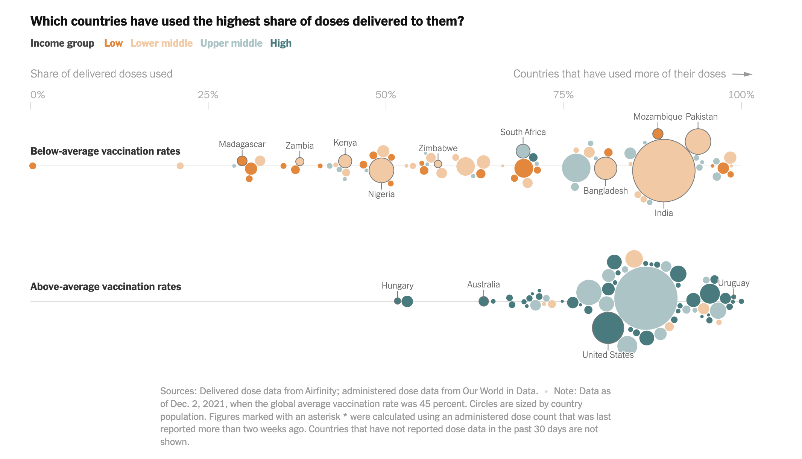
Look at each pair of images. What makes it easy — or hard — to spot the change?
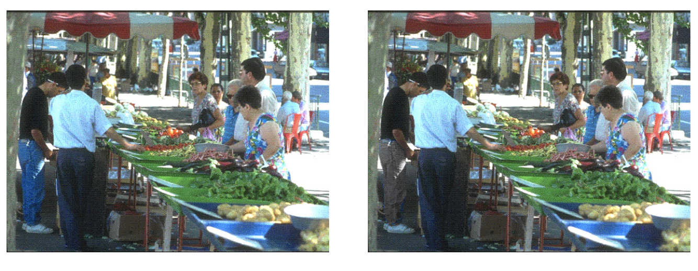
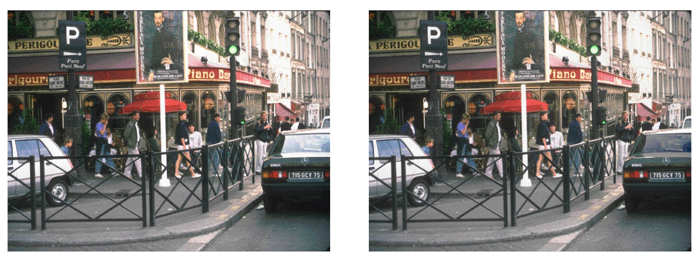
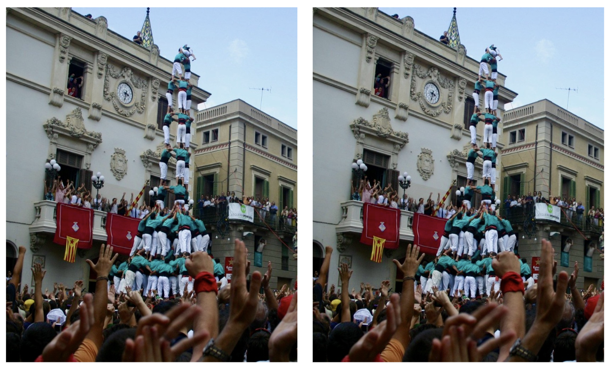
Tip
Takeaway for dataviz: If something is important, you can’t rely on your audience to find it. You must direct their attention to it.
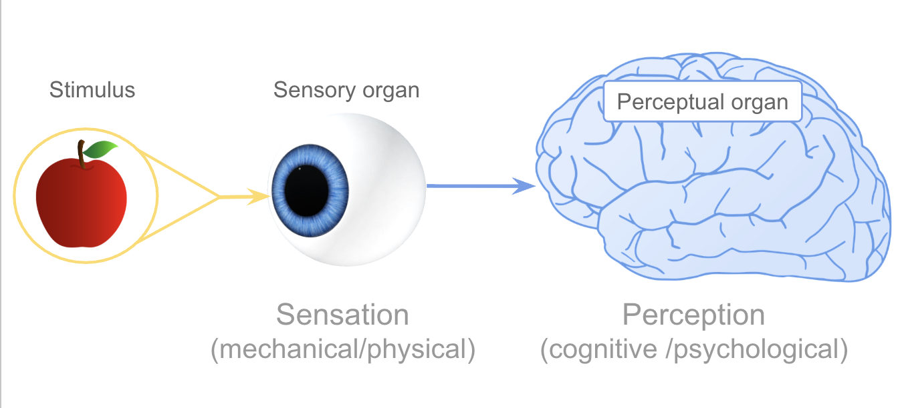
Visual processing has two components:
Eyes — image receptors
Brain — image processor + interpreter
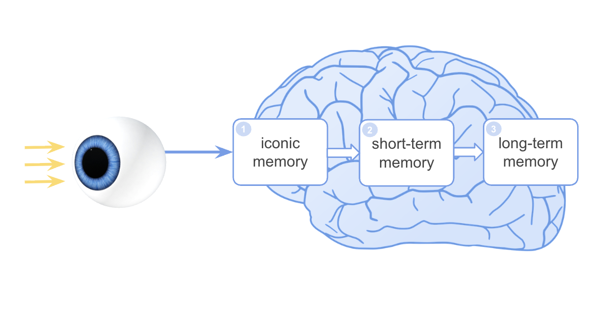
| Memory Type | Analogy | Duration |
|---|---|---|
| Iconic memory | Buffer / temp storage | < 0.5 sec |
| Short-term (working) | RAM | ~20 sec |
| Long-term | Hard disk | Permanent |
Good visualizations work with these limits — not against them.
Iconic memory is a waiting room where each snapshot waits to be passed to short-term memory.
Note
This is the visual system doing work before you’re aware of it.
Can you count the 6s?
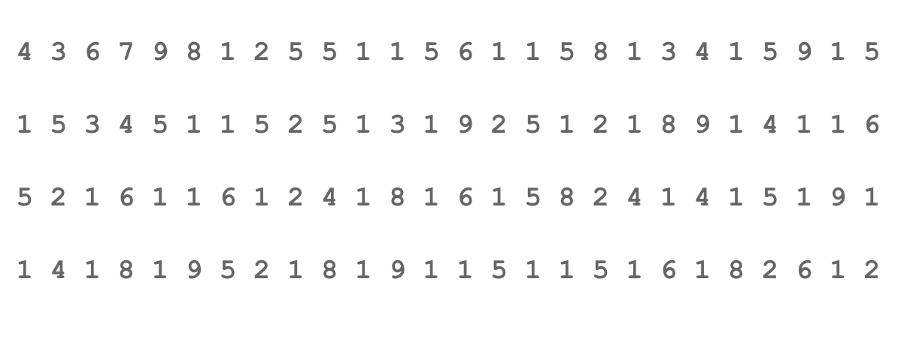
Now try:
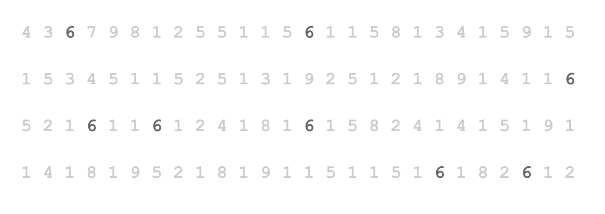
What changed? A single visual attribute, color, made the target pop out without counting.
This is preattentive processing at work.
| Preattentive (fast) | Attentive (slow) |
|---|---|
| Parallel — whole image at once | Serial — scan one element at a time |
| < 250ms regardless of # items | Time increases with number of items |
| “Pop-out” effect | Effortful, exhausting |
These visual features are processed before conscious attention:
Form
Color
Spatial
Which attribute makes the target pop out instantly? Which requires search?
Try each example below and think about why it’s fast or slow.
Use preattentive attributes to direct attention
If something is the most important part of your chart, an outlier, a threshold, a key category, encode it with a preattentive attribute (usually color or size) so it pops out without effort.
Don’t make your audience search for the point.
Don’t overload the preattentive channels
Using too many colors, sizes, or shapes forces your viewer into attentive (slow) search mode, exactly what you were trying to avoid.
Rule of thumb: highlight one thing with a strong preattentive signal. Keep everything else neutral (gray is your friend).
No hierarchy
Everything is the same color and size. Exhausting to look at.
Clear hierarchy
One element is highlighted (preattentive). The rest are muted and your eyes are drawn to the focus.
Gray is not boring, it’s helpful It lets your accent color pop out more.
Note
Understanding how our brains pay attention, and how our memory system handles incoming information, goes a long way toward making better visualizations.
Key question to ask yourself every time: “Am I making my audience work harder than necessary?”
Gestalt (German: “whole” or “form”)
Good design works with these principles
| Principle | The Brain Assumes… |
|---|---|
| Proximity | Things close together belong together |
| Similarity | Things that look alike are related |
| Continuity | Lines and curves continue in the smoothest path |
| Closure | Incomplete shapes are seen as complete |
| Connectivity | Objects joined by lines are related |
| Enclosure | Objects sharing a boundary form a group |
| Symmetry | Symmetric arrangements feel stable and grouped |
| Figure & Ground | We separate foreground from background |
We’ll walk through several published charts and identify the Gestalt principles at work.
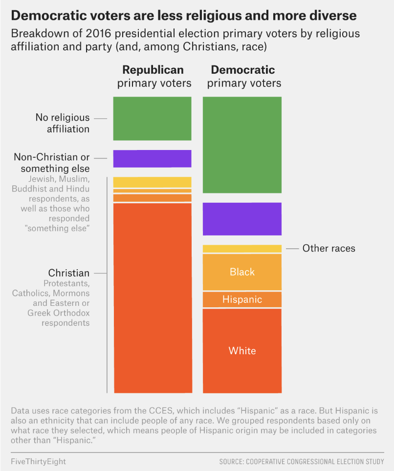
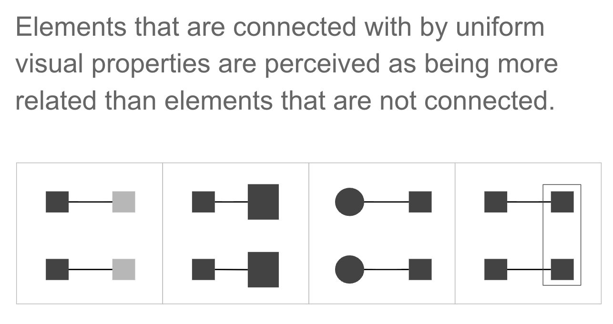
In dataviz: Lines in a line chart connect points across time. The connection implies continuity and relationship — even though the data points are discrete.
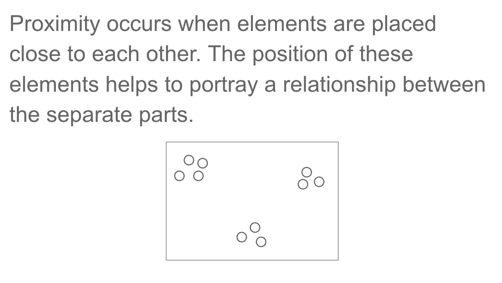
In dataviz: Grouped bar charts use proximity to show that bars within a group belong together (same time period, same category). Spacing between groups signals separation.
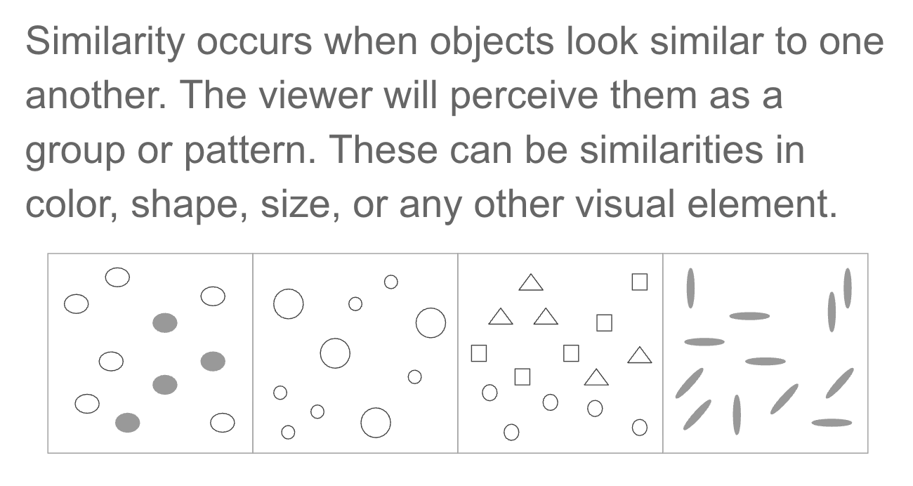
In dataviz: A consistent color for “Democrats” across all charts in a report uses similarity to signal the same category — no legend lookup needed.
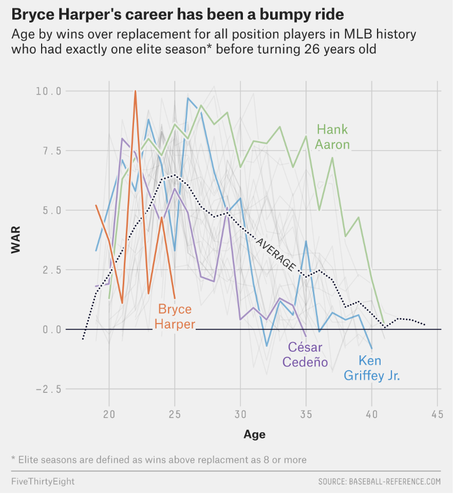
Principle: Continuity
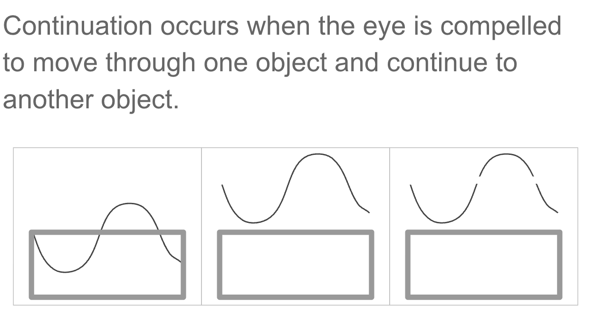
The eye follows the smoothest path through a series of points — we perceive a trend, not individual values.
This is why line charts are so good at showing trajectories.
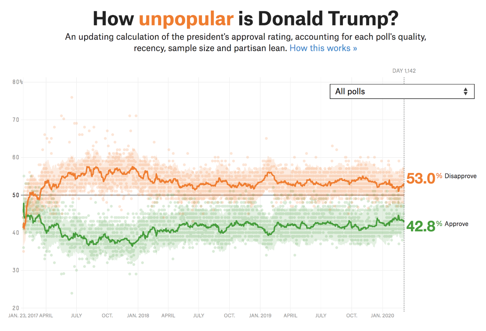
Chunking is the process of grouping individual pieces of information into meaningful wholes to improve retention.
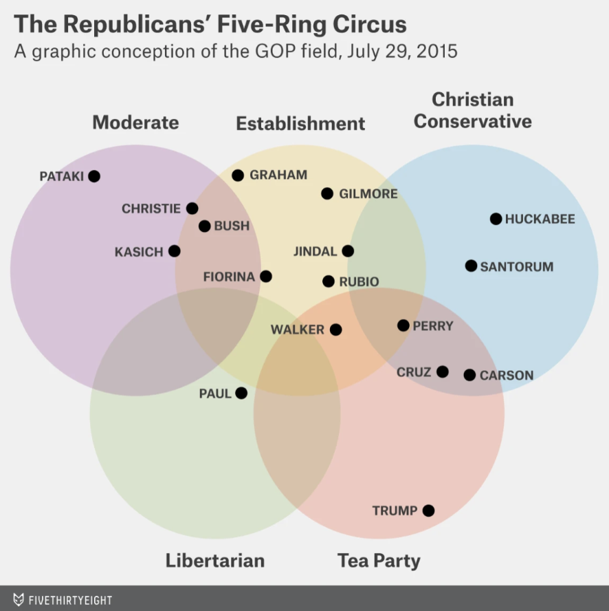
Objects sharing a common region are perceived as belonging together.
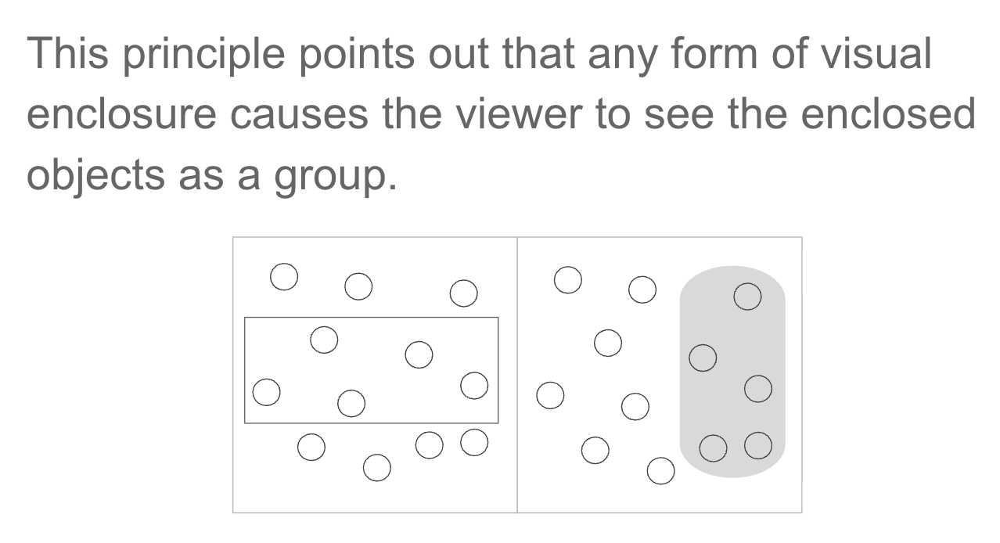
In dataviz: Shaded regions, background panels, and borders create groups without explicit labels. The boundary does the cognitive work for you.
We instinctively separate a “figure” (foreground object) from its “ground” (background).
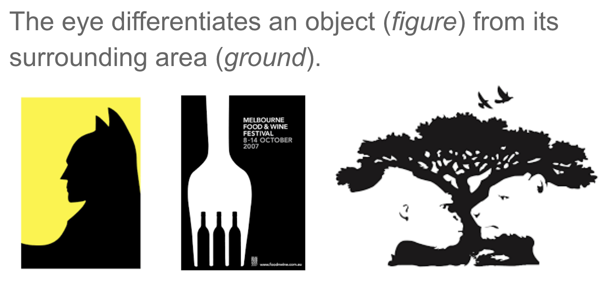
In dataviz: A white chart background is the “ground.” Your data marks are the “figure.” Gridlines should recede into the background — not compete with your data.
High-contrast accent colors push elements into the foreground.
A checklist for every chart you make
With a partner, identify the Gestalt principles in the graphics on the worksheet.
For each chart, note:
HW 4: Recreating a Screen Time Bar Chart
ggplot2Reading for next week:
“We Still Don’t Believe How Much Things Cost” — WSJ Link
Final Project: